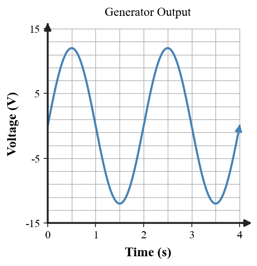
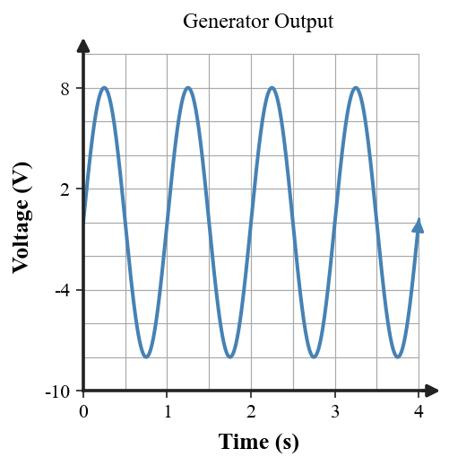

| 1A bar magnet has one end marked N. What pole must be at the opposite end? | 2The facing pole ends are N and S. Do the magnets attract or repel? |
| 3In the field model, where is the magnetic field relatively strongest, and what does arrow direction outside the magnet represent? | 4A bar magnet is cut into three smaller pieces. Describe the pole pattern each piece should have. |
| 1Models A and B show magnetic domains. Which material should act as the stronger magnet, and what feature is your evidence? | 2Use the field pattern between the magnets to predict whether the magnets tend to move together or apart. State the evidence in the pattern. |
| 3A horseshoe magnet has one tip labeled N. What pole type must be at the other tip? | 4Two south poles face one another. Predict the interaction and describe the direction each magnet tends to move. |
| 1A small compass is placed above the bar magnet. Use the field-line arrows to state which way the compass’s north end should point. | 2A student says, “Cutting a magnet in half makes one north-only piece and one south-only piece.” Identify the error and revise the claim using pole-pair or domain reasoning. |
| 3A magnet becomes weaker after its internal domains become less aligned. Explain why the overall magnetic effect decreases. | 4At region P the field lines are much closer together than at region Q. Compare the magnetic field strength at P and Q and name the model feature you used. |
| 1Which statement best describes the source of the magnetic field around a wire? A. Stationary charges in the wire B. Moving charges in an electric current C. The wire’s mass D. The wire’s temperature | 2Describe the shape of the magnetic field around the straight current-carrying wire shown. |
| 3A nearby compass changes direction when the current is switched on. What does this observation reveal about the wire? | 4Compare a straight wire and a single loop. Why can bending the wire into a loop concentrate the magnetic field near the loop’s center? |
| 1Oersted observed that a nearby compass moved when current flowed in a wire. Explain how this evidence connects electricity and magnetism. | 2The diagram shows current and a circular magnetic-field pattern. If the current reverses, what must happen to the field direction? |
| 3A wire carries no current. Which current-produced magnetic effect is missing, and why? | 4Models A, B, and C represent a straight wire, loop, and coil. Which model should have the most concentrated bar-magnet-like field through its center? |
| 1The field model shows circular paths around a vertical wire and a compass aligned at one location. What does this tell you about the magnetic field geometry? | 2Why does a many-turn coil produce a stronger, more organized field than a single loop carrying the same current? |
| 3A student says, “The compass turns because electrons leave the wire and hit it.” Critique the claim and replace it with a current → magnetic field → compass explanation. | 4The coil’s current is reversed. Predict what happens to the direction of the coil’s magnetic field and explain the connection. |
| 1What makes a coil of wire an electromagnet rather than just an ordinary coil? | 2Rank the electromagnets from weakest to strongest using turns and current.
| ||||||||||||
| 3Two identical coils carry the same current. One has an iron core and one has an air core. Which should be stronger, and why? | 4A 2 C charge moves perpendicular to a 4 T magnetic field at 3 m/s. Use F = qvB to determine the magnetic-force magnitude. |
| 1A lifting coil attracts steel only while current flows. Explain why an electromagnet can be switched on and off. | 2An electromagnet keeps the same coil and core but its current doubles. Predict the change in magnetic strength and explain qualitatively. |
| 3Why does adding an iron core strengthen a current-carrying coil? Connect your answer to magnetic-domain alignment. | 4A 0.20 m wire carries 5 A perpendicular to a 0.40 T magnetic field. Use F = BIL to determine the force magnitude. |
| 1For a moving charge in a fixed perpendicular magnetic field, what happens to magnetic-force magnitude if the speed doubles? Use F = qvB. | 2A current-carrying wire experiences a magnetic force. If the current direction reverses while the field stays the same, what happens to the force direction? |
| 3Which device most directly uses a controllable electromagnet to pick up and release steel? A. Compass B. Junkyard lifting crane C. Bar refrigerator magnet D. Plastic ruler | 4A junkyard crane lifts steel while current flows and releases it when current is switched off. Explain the full cause-and-effect chain from current to field to lifting force to release. |
| 1What is electromagnetic induction? A. Voltage produced by changing magnetic conditions B. A permanent magnet losing a pole C. Current turning into mass D. A wire becoming electrically neutral | 2A coil rotates between magnetic poles. Explain why changing the coil’s orientation can induce a voltage. |
| 3Trace the energy transformation in the hand-crank generator from the student’s motion to the lamp. | 4What does “alternating” mean in alternating current from a common generator? |
| 1Use the voltage-time graph to estimate the period of one cycle and identify what the negative-voltage part of the cycle means.  | 2Device A converts electrical energy to motion; device B converts motion to electrical energy. Identify the motor and generator. |
| 3A magnet is moved into a coil once slowly and once quickly. Which motion should induce the larger voltage, and why? | 4In a rotating-coil generator, what magnetic condition must keep changing for voltage to continue being induced? |
| 1A bicycle wheel turns a small generator that powers a light. Identify the mechanical energy input and the electrical output. | 2A student says, “Alternating current means electrons disappear and reappear every half-cycle.” Critique the claim and revise it using direction of charge motion. |
| 3The graph shows a faster repeating generator output. How many complete cycles occur in 4 s, and what does that tell you about frequency?  | 4Explain one important similarity and one energy-transformation difference between a motor and a generator. |
| 1Wind turns a turbine connected to a generator that powers a building. Trace the energy pathway through the system. | 2Which device primarily converts mechanical motion into electrical energy? A. Motor B. Generator C. Transformer D. Electromagnet |
| 3A hand-crank generator stops producing useful electrical output when the handle stops. Explain why this supports energy conservation. | 4A device advertisement claims, “Powerful magnets provide continuous electricity with no input.” What essential energy-source question should you ask before accepting the claim? |
| 1A transformer has 100 primary turns, 500 secondary turns, and 12 V on the primary. Find the secondary voltage and classify it as step-up or step-down. | 2A speaker model uses current in a coil near a magnet to move a cone. Explain why this is a physically reasonable electromagnetic model. |
| 3A transformer transfers electrical energy between separate coils through a changing magnetic field. Identify the energy-transfer role of the changing field. | 4Which device is best described as motion of a coil or diaphragm producing an electrical signal through induction? A. Microphone B. Motor C. Transformer D. Bar magnet |
| 1An ideal transformer steps voltage up while input and output power stay approximately equal. What must happen to current? Use P = IV to justify. | 2A student says, “A step-up transformer makes free power because the voltage gets larger.” Critique the claim using P_in ≈ P_out and P = IV. |
| 3A maglev system reduces contact with the track. Explain how magnetic force can reduce contact friction while propulsion and control still require energy. | 4A microphone model says sound moves a diaphragm and coil near a magnet, inducing an electrical signal. Does the model make sense? Cite two pieces of evidence. |